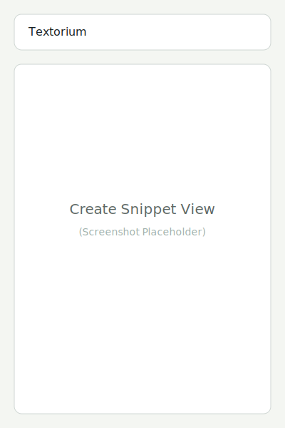
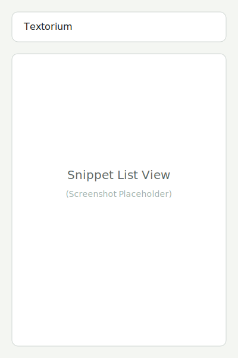
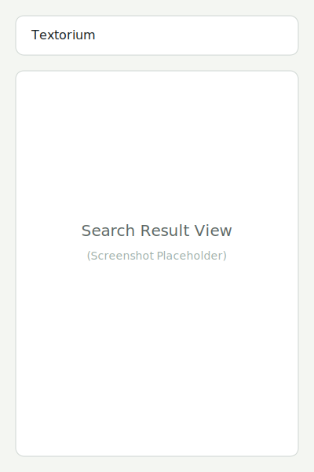
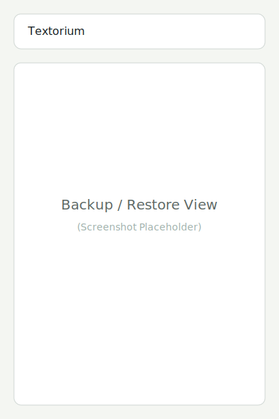

Textoriumは、ローカルでテキストスニペットを管理するためのChrome拡張機能です。
Textorium is a Chrome extension for managing text snippets locally.
Chrome拡張機能管理ページ（chrome://extensions）を開き、「デベロッパーモード」を有効にして、「パッケージ化されていない拡張機能を読み込む」からこのフォルダを選択します。
Open Chrome extensions page (chrome://extensions), enable "Developer mode", click "Load unpacked", and select this folder.
画面上部のフォームにタイトルと本文を入力し、「保存」ボタンをクリックします。タグやカテゴリを追加して整理することもできます。
Enter a title and content in the form at the top, then click "Save". You can also add tags and categories for organization.
保存されたスニペットはリスト形式で表示されます。検索バーを使ってキーワードで絞り込んだり、タグでフィルタリングしたりできます。
Saved snippets are displayed in a list. You can filter them by keyword using the search bar or by tags.
タイトル、本文、タグに含まれるテキストで検索できます。
You can search by text included in the title, content, or tags.
「バックアップ/復元」セクションを展開すると、スニペットデータをJSON形式でエクスポートしたり、以前のバックアップから復元したりできます。
Expand the "Backup / Restore" section to export snippet data as JSON or restore from a previous backup.
